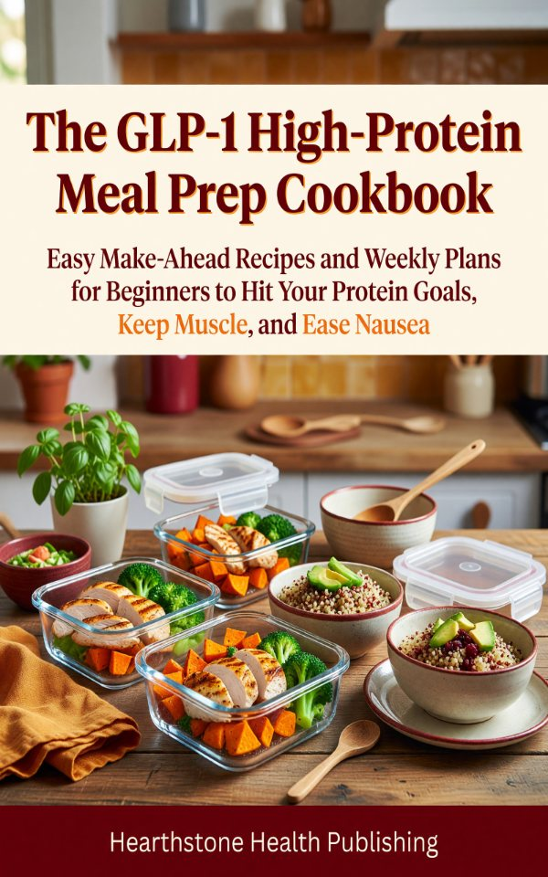

Make-ahead, high-protein recipes built for small GLP-1 appetites. This The GLP-1 High-Protein Meal Prep Cookbook covers GLP-1 cookbook, high protein meal prep, semaglutide recipes with step-by-step instructions for beginners and experienced readers alike. Written by Rachel Ainsley, published by Hearthstone Health Publishing. Available on Kindle for $4.99.
Make-ahead, high-protein recipes built for small GLP-1 appetites. Hit your daily protein target, protect lean muscle, and ease nausea with batch breakfasts, lunch bowls, sheet-pan mains, freezer soups, and a ready-to-use 7-day meal prep plan.

Practical, beginner-friendly content designed to take you from zero to confident.
Make-ahead, high-protein meals (most 25-40g per serving) so you hit your target in a few bites — even when you are barely hungry.
Protein-first recipes designed to keep lean muscle while you lose fat, the way GLP-1 weight loss should work.
Gentle-on-the-stomach meals for hard days, plus storage and reheating so a week of high-protein food is ready in the fridge.
As an Amazon Associate I earn from qualifying purchases. Certain content that appears on this site comes from Amazon. This content is provided "as is" and is subject to change or removal at any time.